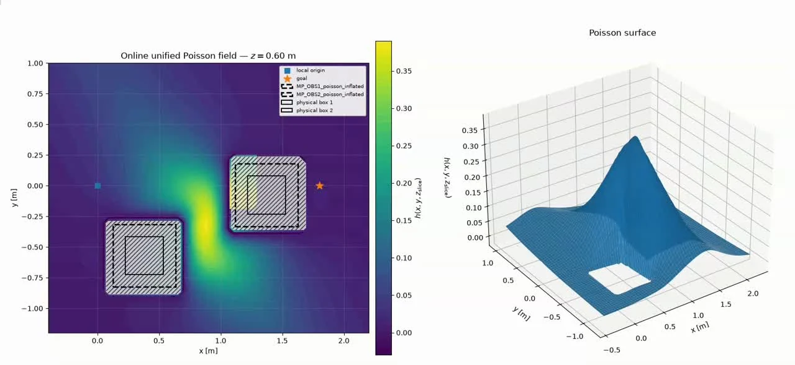
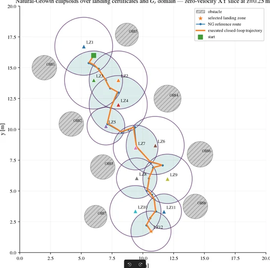
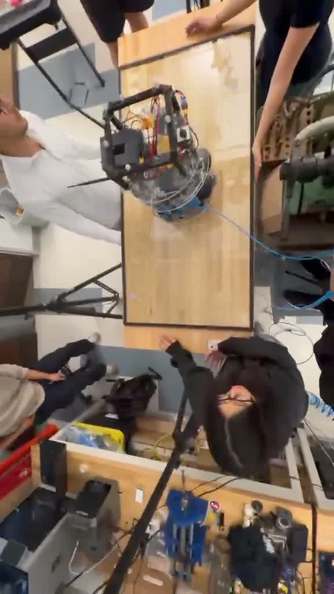

California Institute of Technology — AMBER Lab
Open research record ↗
Each record starts with the research problem and then opens into the methods, equations, experimental evidence, measured results and my specific contribution. Figures below are extracted as individual technical assets from the underlying work — not screenshots of portfolio pages.


I developed and experimentally evaluated a modular safety-critical control architecture for a Mars-analog helicopter landing problem with changing obstacles and alternative landing zones. The work combined nominal MPC control, Poisson-derived environmental safety fields, HOCBF constraints, Lyapunov certificates, r-out-of-p contingency logic and chained ellipsoidal funnels. In parallel, I contributed to ATMOS simulation and hardware-validation infrastructure.
Complex obstacle geometry is converted into a smooth differentiable scalar field rather than defining a separate analytical barrier for every obstacle.
The nominal command is minimally modified to satisfy safety and stability constraints. For the landing dynamics, higher-order barriers make acceleration the decision variable while the CLF drives the active task.
Overlapping regions create a connectivity-aware safe corridor that can be grown until obstacles or workspace limits are encountered.
Each landing zone has a local Lyapunov certificate. The controller preserves at least r viable alternatives so the vehicle does not commit too early to one destination.



Supported the free-flying spacecraft testbed through ROS 2/Gazebo/PX4 simulation, motion-capture integration, IoT instrumentation, repository work and hardware-validation workflows.



Swarm Network-as-a-Service treats a coordinated UAV swarm as reconfigurable airborne communication infrastructure. Service performance depends simultaneously on mobility, relay topology, radio feasibility and failure recovery, so the simulator must couple robotics and wireless behavior rather than evaluate them separately.
The swarm is modeled as a time-varying relay graph. Packet progress is gated by feasible links using range, SNR and capacity conditions, so communication constraints directly affect runtime service.
Failure events trigger route recomputation and topology adaptation; standby nodes can be incorporated to restore connectivity while the 3D scene, packet state and network service remain synchronized.
ROS 2 coordinates mission logic, state, packet events and telemetry; Isaac Sim provides embodied physics and the 3D environment; Sionna models the communication links; PX4/Pegasus can provide autopilot-level execution.
Performed analogous simulations and comparative analysis against AirPAW datasets to evaluate network-performance trends including SNR, capacity, routing behavior and failure recovery.


Built a reproducible ROS 2 sensing and communication platform intended as the inertial backbone for future multi-sensor navigation and SLAM. The work combined embedded sensing, timing, calibration, networking, visualization and experiment logging on Jetson-class hardware.
Implemented standardized IMU acquisition, timestamping, logging and quaternion-based attitude estimation with calibration and filtering. The platform was designed for later EKF/UKF, GNSS and VIO/SLAM integration rather than claiming those higher-level estimators as completed results.
Profiled wireless middleware behavior and migrated to a custom UDPv4 Fast DDS transport / QoS configuration to reduce latency and jitter for distributed robotics experiments.


Model atmospheric descent, characterize attitude and stability, and reconstruct the post-flight trajectory of a compact probe using aerodynamic modeling and multi-sensor measurements.
Modeled descent behavior under drag, attitude changes and stability effects and used those models to interpret real flight data.
Designed a multi-port Pitot arrangement for airflow-vector estimation and combined IMU, GPS and Pitot measurements for trajectory reconstruction.
Performed CFD / airflow-correction studies and wind-tunnel calibration to reduce aerodynamic interference and improve sensor placement.


Developed an end-to-end UAM / UTM simulation workflow that converts Copernicus satellite imagery into a discrete occupancy / corridor representation, reconstructs a corresponding 3D urban environment in Blender, and exports the scene and corridor waypoints to ROS 2 / Gazebo for multi-UAV experiments.